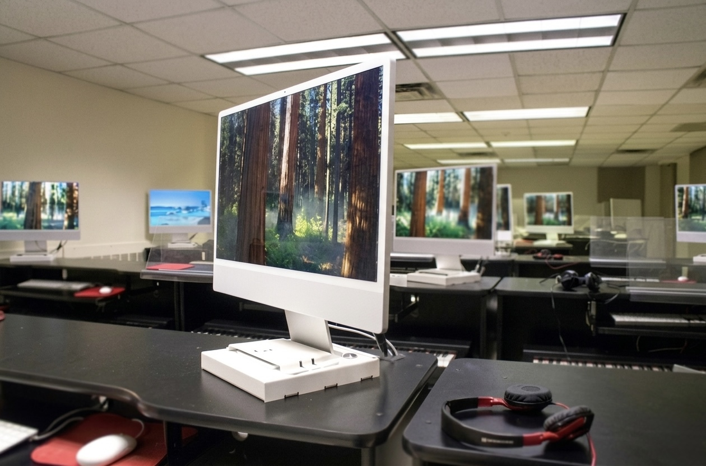

Homework 3 - Field Blur
This page shows the original image and the edited version created with the Field Blur tool in Photoshop.
Original image before applying Field Blur.

Image after using the Field Blur tool to create a shallow depth-of-field effect.